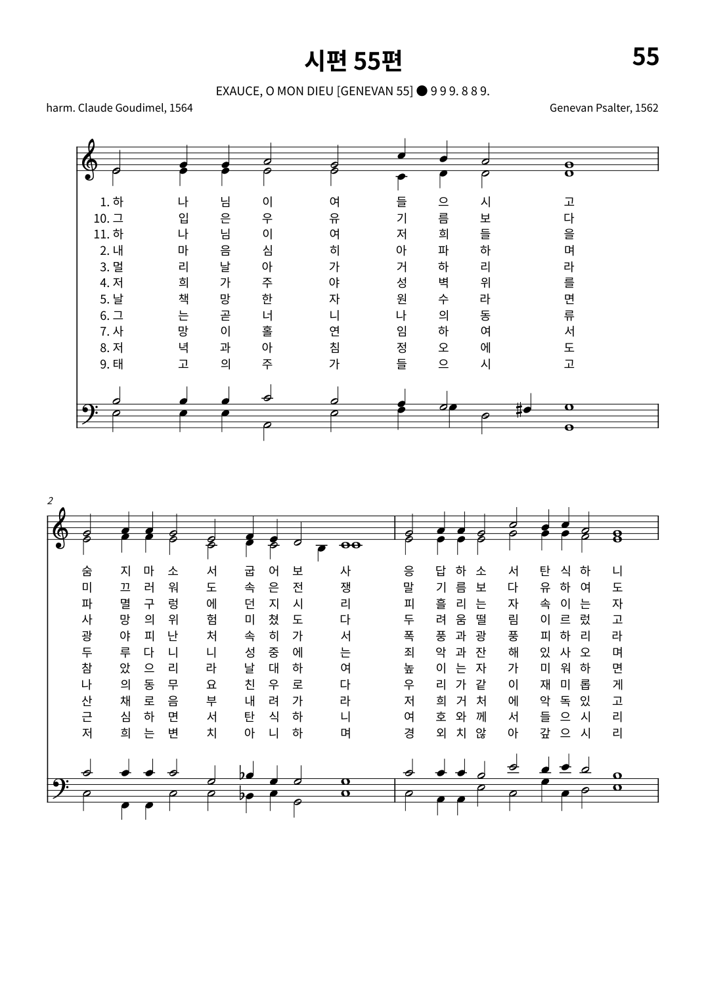
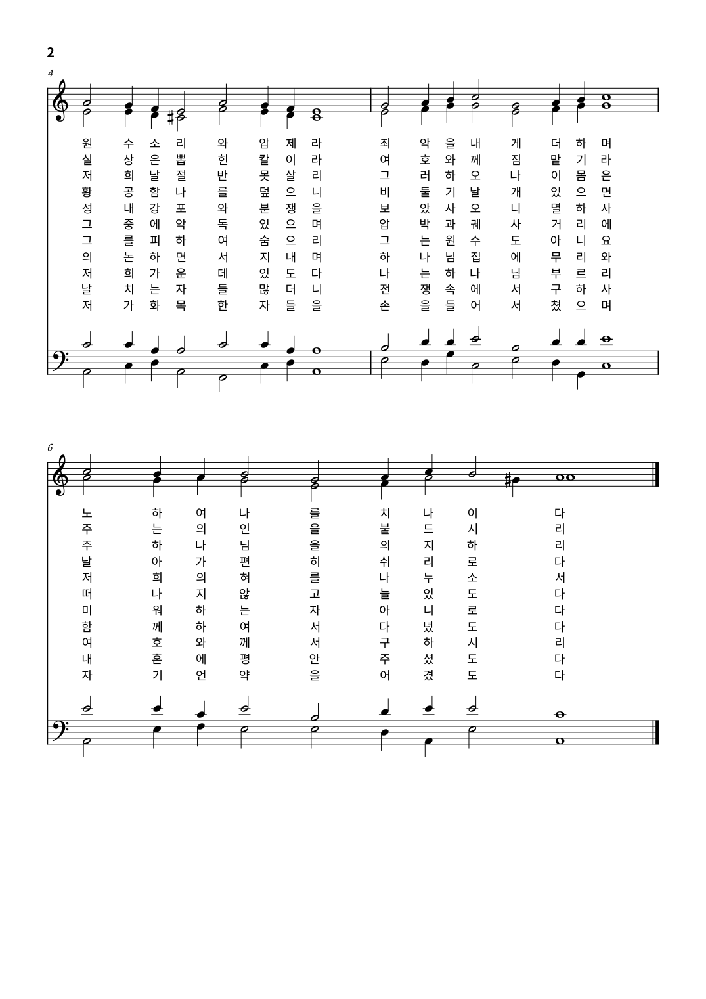

시편 55편
EXAUCE, O MON DIEU [GENEVAN 55] · 9 9 9. 8 8 9.
곡조: Genevan Psalter, 1562 · 화성: Claude Goudimel, 1564 · 가사: 개역한글판 시편 55편 편역(AI 초벌 편역판 · 신학 감수 전) · 11절
악보 PDF MusicXML(출력용) MusicXML(반주용, 전주·반복 포함) 개역한글 시편 55편 읽기
악보


가사
1절
하나님이여 들으시고
숨지 마소서 굽어 보사
응답하소서 탄식하니
원수 소리와 압제라
죄악을 내게 더하며
노하여 나를 치나이다
하나님이여 들으시고
숨지 마소서 굽어 보사
응답하소서 탄식하니
원수 소리와 압제라
죄악을 내게 더하며
노하여 나를 치나이다
2절
내 마음 심히 아파하며
사망의 위험 미쳤도다
두려움 떨림 이르렀고
황공함 나를 덮으니
비둘기 날개 있으면
날아가 편히 쉬리로다
내 마음 심히 아파하며
사망의 위험 미쳤도다
두려움 떨림 이르렀고
황공함 나를 덮으니
비둘기 날개 있으면
날아가 편히 쉬리로다
3절
멀리 날아가 거하리라
광야 피난처 속히 가서
폭풍과 광풍 피하리라
성내 강포와 분쟁을
보았사오니 멸하사
저희의 혀를 나누소서
멀리 날아가 거하리라
광야 피난처 속히 가서
폭풍과 광풍 피하리라
성내 강포와 분쟁을
보았사오니 멸하사
저희의 혀를 나누소서
4절
저희가 주야 성벽 위를
두루 다니니 성중에는
죄악과 잔해 있사오며
그 중에 악독 있으며
압박과 궤사 거리에
떠나지 않고 늘 있도다
저희가 주야 성벽 위를
두루 다니니 성중에는
죄악과 잔해 있사오며
그 중에 악독 있으며
압박과 궤사 거리에
떠나지 않고 늘 있도다
5절
날 책망한 자 원수라면
참았으리라 날 대하여
높이는 자가 미워하면
그를 피하여 숨으리
그는 원수도 아니요
미워하는 자 아니로다
날 책망한 자 원수라면
참았으리라 날 대하여
높이는 자가 미워하면
그를 피하여 숨으리
그는 원수도 아니요
미워하는 자 아니로다
6절
그는 곧 너니 나의 동류
나의 동무요 친우로다
우리가 같이 재미롭게
의논하면서 지내며
하나님 집에 무리와
함께 하여서 다녔도다
그는 곧 너니 나의 동류
나의 동무요 친우로다
우리가 같이 재미롭게
의논하면서 지내며
하나님 집에 무리와
함께 하여서 다녔도다
7절
사망이 홀연 임하여서
산 채로 음부 내려가라
저희 거처에 악독 있고
저희 가운데 있도다
나는 하나님 부르리
여호와께서 구하시리
사망이 홀연 임하여서
산 채로 음부 내려가라
저희 거처에 악독 있고
저희 가운데 있도다
나는 하나님 부르리
여호와께서 구하시리
8절
저녁과 아침 정오에도
근심하면서 탄식하니
여호와께서 들으시리
날 치는 자들 많더니
전쟁 속에서 구하사
내 혼에 평안 주셨도다
저녁과 아침 정오에도
근심하면서 탄식하니
여호와께서 들으시리
날 치는 자들 많더니
전쟁 속에서 구하사
내 혼에 평안 주셨도다
9절
태고의 주가 들으시고
저희는 변치 아니하며
경외치 않아 갚으시리
저가 화목한 자들을
손을 들어서 쳤으며
자기 언약을 어겼도다
태고의 주가 들으시고
저희는 변치 아니하며
경외치 않아 갚으시리
저가 화목한 자들을
손을 들어서 쳤으며
자기 언약을 어겼도다
10절
그 입은 우유 기름보다
미끄러워도 속은 전쟁
말 기름보다 유하여도
실상은 뽑힌 칼이라
여호와께 짐 맡기라
주는 의인을 붙드시리
그 입은 우유 기름보다
미끄러워도 속은 전쟁
말 기름보다 유하여도
실상은 뽑힌 칼이라
여호와께 짐 맡기라
주는 의인을 붙드시리
11절 (시편 1)
하나님이여 저희들을
파멸 구렁에 던지시리
피 흘리는 자 속이는 자
저희 날 절반 못 살리
그러하오나 이 몸은
주 하나님을 의지하리
하나님이여 저희들을
파멸 구렁에 던지시리
피 흘리는 자 속이는 자
저희 날 절반 못 살리
그러하오나 이 몸은
주 하나님을 의지하리